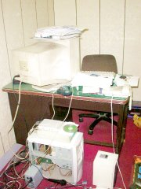

前兩天在排新版的『標準式』的CPU 的主選單，嗯，還蠻不錯的。 
今天把前幾回日記要放的照片還有圖都補了上去。數位相機真是方便， 尤其在想放上自己看到了些甚麼東西時，馬上弄馬上好。
螢幕上堆了幾十篇的英文論文，有的看過，有的沒看過。桌上是計算機、光碟、 電話、其它雜物。沒殼的主機擺在地上，POWER 接在旁邊， 兩個附AMP 的喇叭也是放在地上。這就是我的小小天地， 透過網路線，我可以連接到任何可能的地方。
主機上擺的是AV-MATE，有時會把螢幕切換到第四台看。 運氣好的時候會看到不錯的電影，不過往往都只看到後半部。@_@